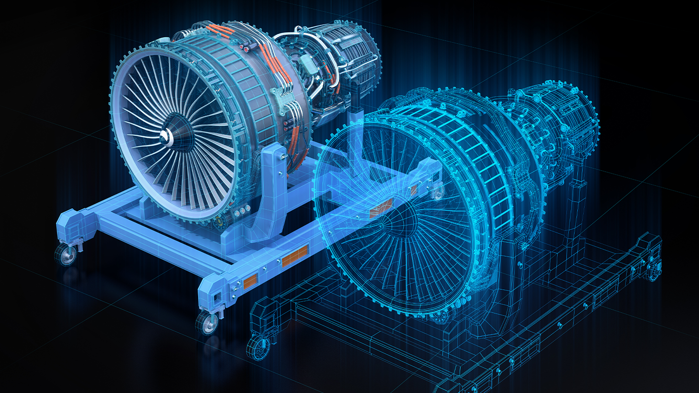
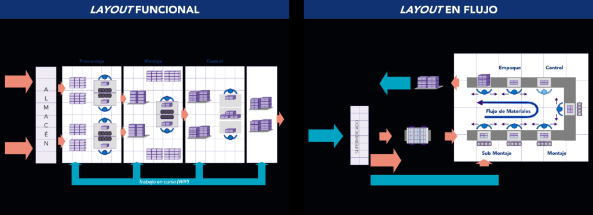
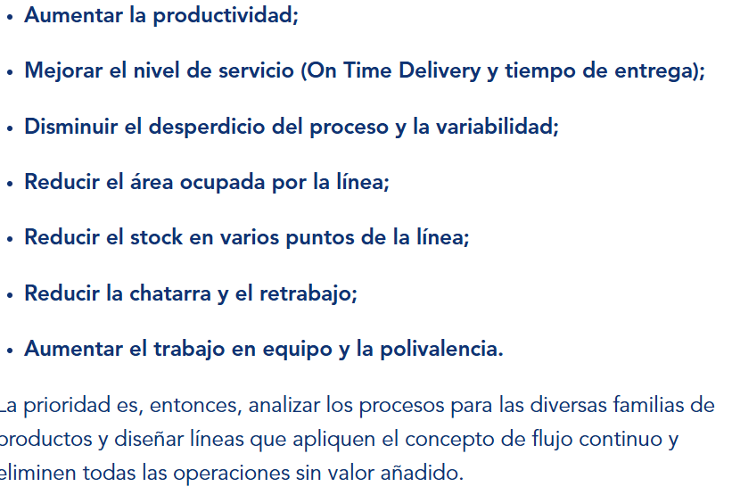
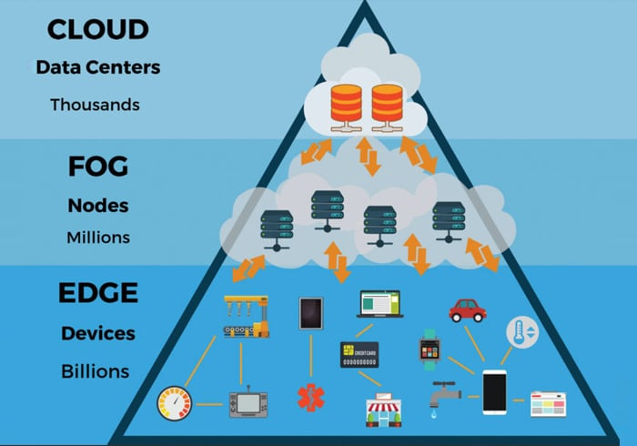
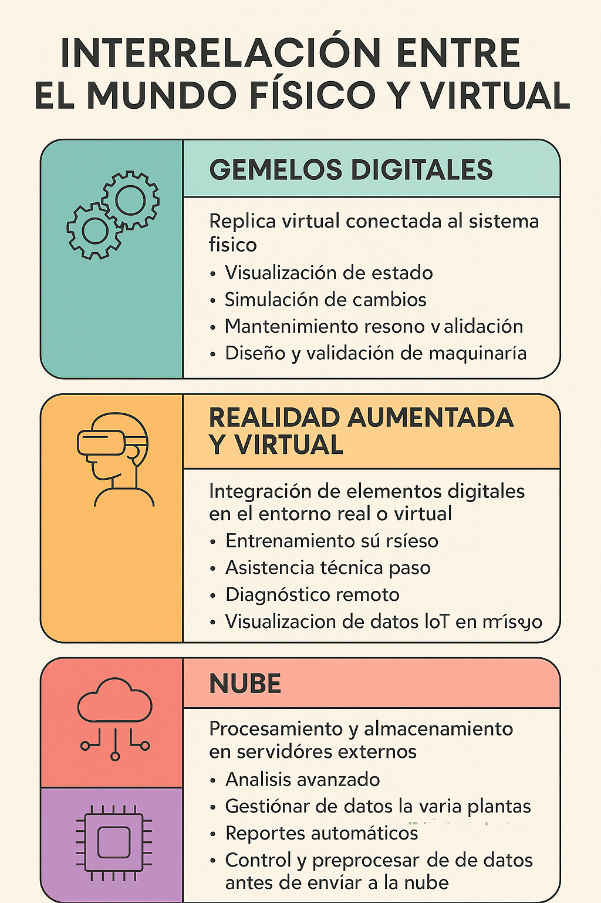

UD2. Cuarta Revolución Industrial
SESIÓN 4 — Mundo físico y virtual
4.1. Digital Twins (Gemelos Digitales)

Un gemelo digital es una representación virtual y dinámica de un objeto, proceso o sistema físico.
No es un simple modelo 3D o una simulación estática. Se caracteriza por:
- Estar conectado en tiempo real con su equivalente físico mediante sensores.
- Actualizarse automáticamente con datos reales de funcionamiento.
- Permitir analizar, predecir y optimizar el comportamiento del sistema original.
En la industria se utilizan para observar máquinas, líneas de producción, instalaciones o incluso fábricas completas.
Para qué se usan: Los gemelos digitales permiten
- El usuario observa el estado real de una máquina o proceso sin necesidad de detener la producción.
- Permiten probar cambios sin riesgo. Se pueden simular ajustes, nuevas configuraciones o diferentes cargas de trabajo.
- Ayudan a detectar ineficiencias, cuellos de botella o configuraciones incorrectas.
- Permiten evaluar diseños nuevos antes de construirlos físicamente: maquinaria, robots, layouts de planta.
- Desde el diseño hasta el mantenimiento, pasando por la fabricación y el uso final.
Simulación y predicción en tiempo real
El valor central de un gemelo digital es la capacidad de reaccionar a los datos del mundo físico. Algunos usos clave son:
Simulación en tiempo real
El modelo virtual recibe datos del objeto físico cada segundo o milisegundo.
Esto permite:
- Comparar el funcionamiento esperado con el real.
- Detectar desviaciones.
- Probar cómo afectaría cambiar un parámetro sin modificar la máquina real.
Ejemplo:
Un gemelo digital de una prensa hidráulica muestra en la pantalla que la presión en un cilindro comienza a bajar respecto al modelo teórico, indicando un desgaste.
Predicción mediante análisis de datos
El sistema analiza patrones y tendencias.
Permite:
- Estimar cuándo fallará un componente.
- Anticipar averías.
- Optimizar el momento exacto para sustituir piezas.
Ejemplo:
El gemelo digital de un motor predice que el rodamiento fallará en doce días por un incremento progresivo de vibración y temperatura.
Ejemplos en mantenimiento y diseño
1. Mantenimiento predictivo avanzado
Un gemelo digital de una cinta transportadora recopila datos de velocidad, temperatura de los rodillos y vibración.
El modelo detecta un patrón que indica desgaste en uno de los rodillos.
Resultado: el técnico programa la reparación antes de que la cinta falle.
2. Diseño y validación de maquinaria
Un fabricante de robots crea un gemelo digital de un prototipo para probar movimientos, cargas y ciclos de trabajo.
Gracias a la simulación, se corrigen errores antes de fabricar la versión física.
3. Optimización del layout de una planta
Antes de instalar nuevas líneas de producción, la empresa genera una réplica digital de la fábrica.
Simulan rutas de transporte, distancias y tiempos para elegir el diseño más eficiente.
4. Formación sin riesgo
Los operarios usan un gemelo digital de una máquina compleja para aprender a manejarla sin peligro y sin detener la producción real.


4.2. Realidad aumentada y virtual en la industria
1 Aplicaciones en formación y asistencia técnica
La realidad aumentada y la realidad virtual permiten superponer información digital sobre el entorno o recrear escenarios completamente virtuales. En la industria se usan para:
Formación de operarios
- Simulación de máquinas y procesos sin riesgo.
- Prácticas de arranque, parada y emergencias en un entorno seguro.
- Entrenamiento de procedimientos complejos sin detener la planta.
Ejemplo:
Un operario aprende a ajustar un robot colaborativo mediante unas gafas de realidad virtual que reproducen el mismo panel y movimientos del robot real.
Asistencia técnica paso a paso
- Las gafas o tablets muestran instrucciones superpuestas sobre la máquina.
- Se destacan botones, tornillos o piezas exactas que deben manipularse.
- El personal técnico recibe instrucciones sin necesidad de un experto presencial.
Ejemplo:
Un técnico apunta la cámara de una tablet hacia un armario eléctrico y la realidad aumentada señala qué cables comprobar, qué fusible sustituir y el orden de intervención.
Mantenimiento remoto
- Un experto remoto ve lo mismo que el técnico en planta.
- Puede guiar visualmente con flechas, anotaciones o vídeos integrados.
2 Integración con IoT y sensores
La realidad aumentada puede utilizar datos obtenidos por sensores IoT para mostrar información contextual en tiempo real.
Aplicaciones:
- Visualizar temperatura, vibración o presión sobre la propia máquina.
- Comprobar parámetros sin abrir carcasas ni paneles.
- Recibir alarmas superpuestas en el campo de visión.
Ejemplo:
Las gafas de un técnico muestran un motor real con indicadores en vivo del consumo eléctrico y la temperatura obtenidos del sistema IoT de planta.
.
3 Beneficios en reducción de errores
La realidad aumentada y virtual reducen errores porque:
- Estandarizan procedimientos.
- Evitan confusiones al indicar exactamente qué pieza manipular.
- Disminuyen el tiempo de diagnóstico.
- Mejoran la precisión en mantenimientos repetitivos.
- Eliminan interpretaciones incorrectas de manuales.
Ejemplo:
Un operario realiza un montaje guiado paso a paso con RA y reduce un 30 por ciento los errores respecto a las instrucciones en papel.
-> ¿Lo probamos en aula Ateca?
4.3. La nube y el edge computing

Procesamiento distribuido y análisis local
La digitalización industrial combina dos estrategias de computación fundamentales:
1 Computación en la nube (Cloud)
Los datos se envían a servidores externos donde se almacenan y procesan.
Permite:
- Manejar grandes volúmenes de información.
- Ejecutar análisis complejos y modelos avanzados.
- Acceder a los datos desde cualquier ubicación.
- Escalar rápidamente si la planta crece.
Ejemplo:
Los datos de consumo energético de todas las líneas se envían a una plataforma central que analiza tendencias y genera informes automáticos.
2 Edge computing (computación en el borde)
El procesamiento se realiza cerca de la máquina, en controladores o pasarelas locales.
Permite:
- Tomar decisiones en milisegundos.
- Reducir latencia.
- Mantener el funcionamiento incluso si se pierde conexión con la nube.
- Filtrar y procesar solo datos relevantes antes de enviarlos.
Ejemplo:
Una pasarela edge detecta una vibración anormal en un motor y detiene la máquina en menos de un segundo, sin esperar a la nube.
3 Ventajas de latencia y seguridad
Menor latencia
El edge permite tiempos de respuesta ultrarrápidos.
Esto es clave en:
- Robótica
- Maquinaria de alta velocidad
- Sistemas de seguridad industrial
- Control de calidad en línea de producción
Mejora de la seguridad
- Los datos sensibles pueden procesarse localmente sin salir de la planta.
- Se reduce la exposición a ataques externos.
- Se controla qué información se comparte con la nube.
4 Ejemplos en fábricas inteligentes
1. Control inteligente de robots
Un procesador local edge analiza datos de posición, fuerza y velocidad para ajustar el movimiento del robot en tiempo real.
2. Sistemas de calidad basados en visión artificial
Las cámaras envían imágenes al edge, que detecta defectos en milisegundos sin enviar cada imagen a la nube.
3. Gestión energética distribuida
Varias máquinas envían datos a un sistema edge que calcula consumos prioritarios y ajusta cargas sin depender del servidor central.
4. Fábricas multicentro conectadas en la nube
Varias plantas envían datos a una plataforma cloud común para comparar eficiencia, detectar anomalías globales y coordinar la producción.
| Bloque | Conceptos clave | Usos industriales principales |
|---|---|---|
| 1. Gemelos Digitales (Digital Twins) | Réplica virtual conectada al sistema físico. Actualización en tiempo real con datos de sensores. Simulación avanzada y predicción. | Visualización del estado real, simulación de cambios, mantenimiento predictivo, diseño y validación de maquinaria, optimización de procesos. |
| 2. Realidad Aumentada y Virtual (AR/VR) | Integración de elementos digitales en el entorno real o recreación de escenarios virtuales. Uso de gafas, tablets o visores. | Formación sin riesgo, asistencia técnica paso a paso, diagnóstico remoto, visualización de datos IoT sobre la máquina, reducción de errores. |
| 3. Cloud Computing (Nube) | Procesamiento y almacenamiento en servidores externos. Acceso remoto y escalabilidad. | Análisis avanzado, gestión de datos de varias plantas, informes automáticos, control global de producción. |
| 4. Edge Computing | Procesamiento local cerca de la máquina. Baja latencia y alta seguridad. | Decisiones en milisegundos, control de robots, calidad en línea basada en visión artificial, filtrado y preprocesado de datos antes de enviarlos a la nube. |
Actividad: Interrelación entre mundo físico y virtual
Cómo se conecta una fábrica real con su réplica digital
Identificar ejemplos reales de interacción entre el entorno físico (máquinas, sensores) y el entorno virtual (modelos, simulaciones, datos).
- Elige una máquina, instalación o proceso industrial. Puede ser:
una prensa, una cinta transportadora, un robot, un almacén automatizado, un motor, un sistema de climatización industrial. 2. Describe brevemente cómo se podría aplicar alguno de los siguientes elementos:
- Gemelo digital
- Realidad aumentada o virtual
- Nube o edge computing
- Explica:
a. Qué datos recogería el sistema y cómo se transmitirían.
b. Qué decisiones o mejoras se generarían en el entorno virtual.
c. Qué beneficios tendría para la producción o el mantenimiento. 4. Añade un ejemplo real encontrado en Internet relacionado con alguna de estas tecnologías.
Ejemplo actividad resuelta: .
Tema elegido: Robot de soldadura en una línea de automoción
1. Tecnologías aplicadas
a. Gemelo digital
El robot dispone de un gemelo digital que replica sus movimientos, ciclos y parámetros de soldadura en tiempo real gracias a los datos enviados por sensores de corriente, temperatura y posición de los ejes.
El sistema compara continuamente el comportamiento real con el modelo teórico y detecta desviaciones en la fuerza aplicada o el tiempo de cada punto de soldadura.
b. Edge computing
Una pasarela edge instalada junto al robot procesa localmente datos críticos como vibración, fuerza del actuador y temperatura del brazo.
Si detecta un patrón anómalo, actúa en milisegundos, reduciendo la velocidad o deteniendo el robot para evitar fallos.
2. Datos recogidos y transmisión
- Sensores de temperatura y vibración envían datos por Ethernet industrial al controlador.
- El controlador envía los datos filtrados a la pasarela edge.
- Una parte de la información se sincroniza con la plataforma cloud para análisis históricos y comparativa entre robots.
3. Decisiones o mejoras en el entorno virtual
- El gemelo digital identifica un desgaste progresivo en una articulación al observar un aumento del consumo de corriente.
- El sistema edge decide reducir la velocidad del robot para evitar sobrecalentamiento.
- La nube genera un informe mensual comparando el rendimiento del robot con otros de la línea, detectando desviaciones en la eficiencia.
4. Beneficios obtenidos
- Reducción de fallos inesperados gracias al mantenimiento predictivo.
- Ajuste automático de parámetros que reduce el número de soldaduras defectuosas.
- Mejora de la calidad del producto final y reducción del tiempo de parada.
5. Ejemplo real
El sistema Siemens Tecnomatix Process Simulate permite crear gemelos digitales de robots industriales y conectar datos reales para optimizar trayectorias, detectar fallos y simular nuevas líneas de producción antes de instalarlas.
